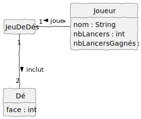
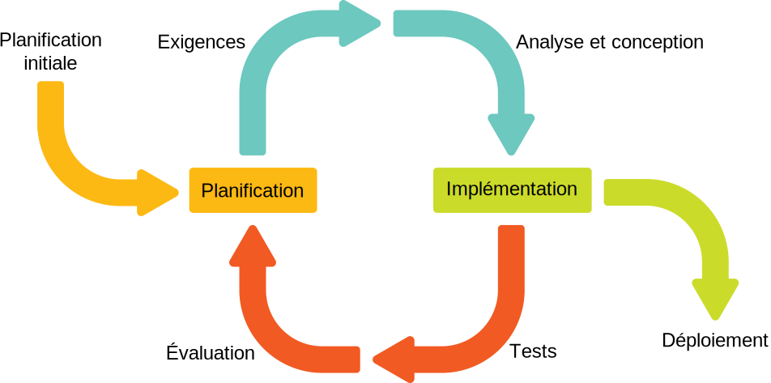
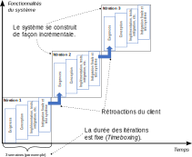
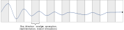

Comment développer un logiciel dans un domaine où l’équipe de développement n’a pas forcément une expérience importante ? Comment faire une bonne conception d’un tel logiciel ? Ce manuel vise à décrire une méthodologie de développement de logiciels qui répond à ces questions.
Nous suivrons une approche systématique permettant de modéliser un domaine d’application et de concevoir un logiciel avec des abstractions (des classes) plus intuitives. Au fond, il s’agit de faire une analyse d’un domaine d’application et proposer une conception du logiciel à développer dans le domaine visé.
Puisqu’une conception doit être réalisée (codée) pour être validée, nous appliquerons une approche de programmation pilotée par les tests (test-driven development ou TDD en anglais). Le TDD est un élément essentiel dans le Devops, une approche permettant de livrer et de faire évoluer rapidement les logiciels de manière robuste.
Parallèlement, surtout pour faire face à la complexité, la méthodologie propose des activités en itération ayant une durée relativement courte (1 à 3 semaines), dans lesquelles on réalise un sous-ensemble du système à développer et on le présente au client pour avoir sa rétroaction. C’est une approche dite “agile”, ayant une base pédagogique neutre, nommée le “processus unifié”.
Dans ce chapitre, nous présentons en détail ces dimensions du développement de logiciels.
1.1 Analyse vs Conception
L’analyse met l’accent sur une investigation du problème et des besoins plutôt que sur la recherche d’une solution.
La conception sous-entend l’élaboration d’une solution conceptuelle répondant aux besoins plutôt que la mise en œuvre de cette solution.


Imaginez un jeu qui est joué dans la vraie vie avec deux dés à six faces. Ensuite, on veut construire un logiciel pour ce jeu et, donc, on peut spécifier la règle du jeu, dont un des nombreux besoins est de générer un nombre aléatoire entre 1 et 6 (comme un dé à six faces). On peut aussi modéliser ce besoin (un élément du problème) par une classe conceptuelle Dé ayant un attribut face dont la valeur est un type int. Les personnes travaillant sur un projet vont facilement comprendre ce modèle, car les gens comprennent les objets qui représentent des aspects de la vraie vie.
Dans l’approche proposée par ce manuel, une modélisation orientée objet est utilisée et pour l’analyse (classes conceptuelles décrivant le problème et les besoins comme à la figure 1.1) et pour la conception (classes logicielles proposant une solution dont la représentation est proche de la modélisation du problème comme à la figure 1.2).
1.2 Décalage des représentations
Vous avez sûrement remarqué que le modèle du problème (figure 1.1) ressemble beaucoup au modèle de la solution (figure 1.2) pour notre exemple de jeu de dés. Cependant, il y a des différences, car une solution comporte des détails sur la dynamique du jeu qui sera codée. Le modèle du problème et le modèle de la solution ne sont donc pas identiques.
Imaginez une autre solution n’ayant qu’une seule classe Jeu contenant toute la logique du jeu. Avez-vous déjà codé une solution simple comme ça? C’est un bon design au départ, car il est simple. Mais au fur et à mesure que vous codez la logique du jeu, bien que ça fonctionne parfaitement, la classe Jeu grossit et devient difficile à comprendre.
Une caractéristique souhaitable d’un design est qu’il soit facile à comprendre et à valider par rapport au problème qu’il est censé résoudre. Plus une solution (conception) ressemble à une description (modèle d’analyse) du problème, plus elle est facile à comprendre et à valider. La différence entre la représentation d’un problème et la représentation de sa solution s’appelle le décalage des représentations. C’est un terme complexe pour un principe très intuitif. Méfiez-vous des classes importantes dont le nom est difficile à relier au problème. Elles vont rendre votre solution plus difficile à comprendre. Pour des explications de Larman, lisez la section 9.3 .
L’exemple du jeu est trivial, puisque le problème est relativement simple. Réduire le décalage des représentations est un principe très important, surtout lorsque le problème à résoudre est complexe.
1.3 La complexité et ses sources
Un(e) ingénieur(e) logiciel est constamment dans une bataille avec une adversaire dont le nom est la “complexité”. Mais qu’est-ce que la complexité ? La figure 1.3 est une image de la complexité. Reconnaissez-vous le domaine d’où vient cette image ?
Voici une définition de la complexité :

En voici quelques exemples en développement de logiciels :
- Un problème peut être complexe, par exemple le domaine des lois fiscales pour lequel des logiciels existent pour aider les gens à faire des déclarations de revenus.
- Un projet logiciel peut être complexe, avec plusieurs packages, chacun ayant beaucoup de classes, etc.
- Un cadre d’applications (cadriciel, framework) est toujours complexe, par exemple un framework comme Angular ou React pour développer un front-end (application frontale), car l’interaction entre l’utilisateur et une application (possiblement répartie dans le nuage) nécessite beaucoup de fonctionnalités supportées par le cadriciel.
- Un algorithme peut être complexe, par exemple l’algorithme de tri de Shell est plus complexe qu’un simple algorithme de tri à bulles. Notez que la complexité d’un algorithme peut parfois apporter des gains de performance. Mais le codage, le débogage et la maintenance d’une implémentation d’un algorithme complexe seront plus coûteux.
- Un patron de conception peut être complexe, par exemple les patrons Visiteur, Décorateur, Médiateur, etc., des GoF (1994). Un patron définit des rôles et parfois du code et des classes supplémentaires à créer. Le tout doit s’intégrer dans un design existant (qui a son propre niveau de complexité).
- Un environnement peut être complexe, par exemple les applications mobiles sont plus complexes à développer et à déboguer que les applications simples sur PC, à cause de l’environnement sans fil, des écrans tactiles de tailles différentes, de l’alimentation limitée, etc.
La figure 1.4 présente les sources de complexité ainsi que leurs noms qu’on va utiliser dans ce manuel.
1.3.1 Complexité inhérente (provenant du problème)
La complexité inhérente est au sein du problème que résout un logiciel. Elle est souvent visible à l’utilisateur du logiciel. Elle se compose des parties du logiciel qui sont nécessairement des problèmes difficiles. N’importe quel logiciel qui tente de résoudre ces problèmes aura une manifestation de cette complexité dans son implémentation. Exemple : un logiciel qui aide à faire des déclarations de revenus aura une complexité inhérente due à la complexité des lois fiscales qui spécifient comment doit être préparée une déclaration.
1.3.2 Complexité circonstancielle (provenant des choix de conception)
Les choix que font les ingénieur(e)s dans un projet peuvent amener de la complexité circonstancielle. En tant qu’ingénieur(e)s, nous avons un devoir de contrôler cette forme de complexité, par exemple en choisissant soigneusement un cadriciel Web ou une architecture logicielle. La complexité circonstancielle peut aussi être due à des contraintes imposées sur la conception, comme l’utilisation obligatoire d’une vieille base de données ou d’une bibliothèque logicielle héritée, d’un langage de programmation, etc. La complexité circonstancielle (aussi appelée accidentelle) peut être gérée avec des technologies, par exemple les débogueurs, les patrons de conception (un Adaptateur pour les bases de données différentes), etc.
1.3.3 Complexité environnementale (provenant de l’environnement d’exécution)
Cette forme de complexité comprend des aspects d’une solution qui ne sont pas sous le contrôle des ingénieur(e)s. Dans un environnement d’exécution, il y a des dimensions comme le ramasse-miettes (garbage collection), l’ordonnancement des fils d’exécution (threads) sur un serveur, l’utilisation de conteneurs (à la Docker), etc. qui peuvent affecter la qualité d’un logiciel. Les ingénieur(e)s doivent gérer ces formes de complexité, mais il n’y a pas beaucoup de stratégies évidentes face aux technologies qui évoluent très vite.

1.4 Survol de la méthodologie
La méthodologie d’analyse et de conception proposée dans ce manuel se base sur celle présentée par Larman (2005).
Voici les éléments importants documentés dans ce manuel (voir la figure 1.5, qui est une adaptation de plusieurs figures de Larman (2005) ):
- Il y a une spécification explicite des besoins (Chapitre 2) dans le modèle de cas d’utilisation ;
- À partir de chaque cas d’utilisation (Chapitre 3), il y a une conception de haut niveau (l’API du système à développer) documentée sous forme de diagramme de séquence système (DSS) (Chapitre 5) ;
- À partir de chaque DSS, on peut définir un ensemble de contrats d’opération (Chapitre 8), surtout pour les opérations complexes ;
- À partir de l’ensemble des besoins, on construit un modèle du domaine (MDD) (Chapitre 4) ;
- Pour faire une conception intuitive et facile à adapter, on propose un modèle de conception sous forme de plusieurs RDCU (Chapitre 9) qui sont cohérentes avec le MDD (pour diminuer le décalage des représentations) et avec les contrats ;
- Pour implémenter les conceptions, on développe du code à partir des diagrammes dans le modèle de conception, ainsi que du code pour tester tout ça selon le développement piloté par les tests (Chapitre 10) ;
- Pour gérer la dette technique (Chapitre 7) on fait du réusinage (Chapitre 11) au besoin ;
- Le tout se fait de manière évolutive, en itérations courtes selon le Processus unifié.

1.5 Développement itératif, évolutif et agile
Nous adoptons également un processus moderne de développement avec des itérations, selon une méthodologie “agile”. Dans le chapitre 2 du livre de Craig Larman, on définit le processus itératif et adaptatif ainsi que les concepts fondamentaux du “processus unifié”, qui est une représentation générique de cette stratégie de développement.
Nous résumons les points importants ainsi :
- Le développement itératif et évolutif implique de programmer et de tester précocement un système partiel dans des cycles répétitifs.
- Un cycle est nommé une itération et dure un temps fixe (par exemple trois semaines) comprenant les activités d’analyse, de conception, de programmation et de test, ainsi qu’une démonstration pour solliciter des rétroactions du client (voir la figure 1.7).
- La durée d’une itération est limitée dans le temps (timeboxed en anglais), de 2 à 6 semaines. Il n’est pas permis d’ajouter du temps à la durée d’une itération si le projet avance plus lentement que prévu, car cela impliquerait un retard de la rétroaction du client. Si le respect des délais semble compromis, on supprime plutôt des tâches ou des spécifications et on les reprend éventuellement dans une itération ultérieure.
- Les premières itérations peuvent sembler chaotiques, car elles sont loin de la “bonne voie”. Avec la rétroaction du client et l’adaptation, le système à développer converge vers une solution appropriée (voir la figure 1.8). Cette instabilité peut être particulièrement prononcée dans un contexte d’entreprise en démarrage.
- Dans une itération, la modélisation (par exemple avec l’UML) se fait au début et devrait prendre beaucoup moins de temps (quelques heures) que la programmation, qui n’est pas triviale (voir la figure 1.9). Selon le contexte du projet (voir le Spectre de la conception), on peut décider de ne pas faire de modélisation. Cependant, en fonction de la complexité du projet à réaliser, cela peut amener des risques, ce que l’on appelle la dette technique.


Le développement itératif et incrémental amène plusieurs avantages selon Larman (2005) :

Cependant, il y a des défis associés à ce genre de développement :
- Instabilité apparente au début : Dans les itérations initiales, puisqu’on n’a pas beaucoup de temps pour comprendre les exigences, le domaine du client et les contraintes du projet, la compréhension des spécifications et la conception sont loin de la “bonne voie”. La conséquence est que les évaluations et les rétroactions peuvent sembler rudes, et cela peut être déstabilisant pour des personnes qui ne sont pas familières avec le processus. La bonne nouvelle est que, normalement, cette instabilité diminue au fur et à mesure que le projet avance (voir la figure 1.8).
- Modifications des objectifs de l’itération en cours au besoin : Il arrive souvent que, dans une itération, les choses ne se passent pas comme nous l’avons imaginé. Par exemple, l’ensemble des récits utilisateur ou des scénarios de cas d’utilisation visés pour l’itération nécessite plus de travail que prévu. La tendance dans ce cas est de nous donner plus de temps pour terminer. Mais cela voudrait dire que la rétroaction de toute l’itération sera retardée. Il serait nécessaire de changer la planification de démonstration avec le client (qui a souvent peu de disponibilités). Donc, le processus nous impose de toujours respecter le délai des itérations. Il s’agit d’une gestion par blocs de temps (en anglais timeboxing). Que faire alors si, dans une itération, nous n’arriverons pas à tout faire ? La résolution est de demander à l’équipe après la moitié de l’itération si les objectifs d’origine peuvent être atteints. Si la réponse est non, nous priorisons les objectifs en plaçant les objectifs secondaires dans la catégorie des “choses à faire” (qui seront éventuellement faites à une itération ultérieure). Voir la figure 1.9. Selon une étude menée par Blincoe et coll. (2019) sur trois gros projets itératifs d’IBM, jusqu’à 54 % des exigences de haut niveau ont été déplacées de cette manière. Le but ultime de cette stratégie est de pouvoir faire une démonstration à la fin de l’itération, même si elle ne comprend pas toutes les fonctionnalités visées au début, car la rétroaction régulière sur des choses qui fonctionnent est essentielle.